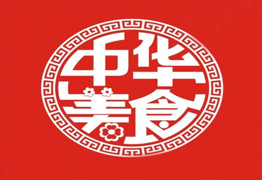

饮食文化
民以食为天，世界上任何一个国家都有一个传统的饮食文明与其它文明共同在历史中轮回。每个地区都有与众不同的饮食习惯和味觉倾向，而各自将这些精妙的技艺发展成了一种习俗，一种文化，这使得无数食客流连在世界的每一个角落。
在亚洲的东方有一个拥有悠久文明历史的国度，那里有令人垂涎的山珍，也有令人回肠的美味。来自五湖四海的食材和调味品正在无时无刻的触动着亿万人的神经和味蕾。
健康养生
—— Health preservation ——
—— Health preservation ——


版权所有：舌尖上的美食网